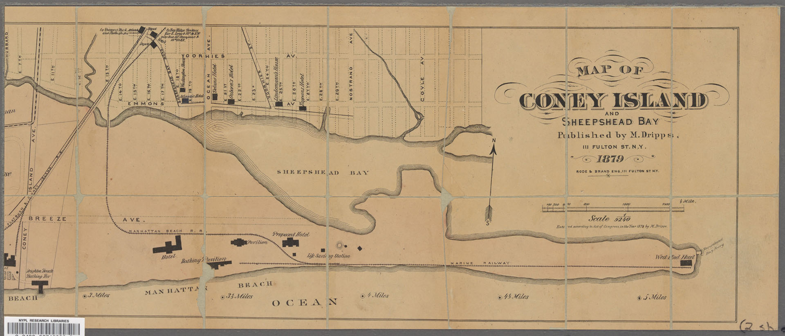
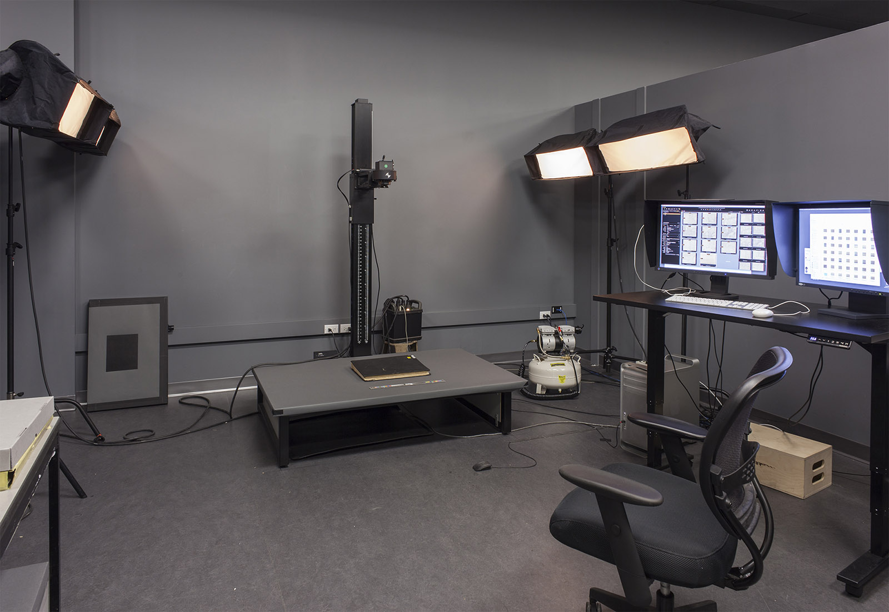
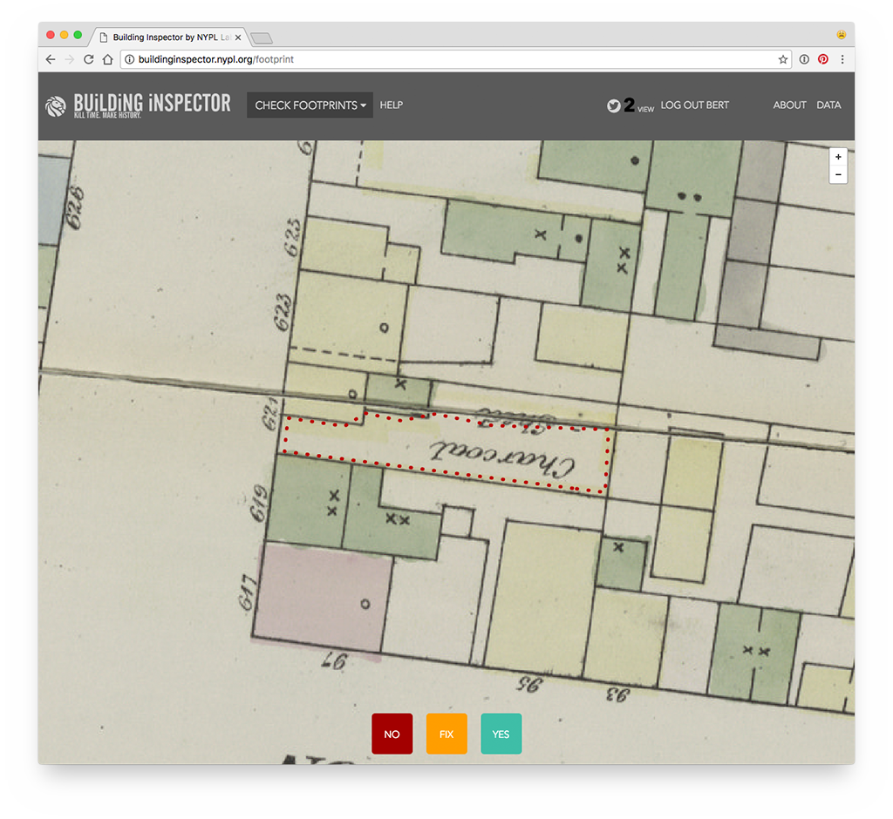
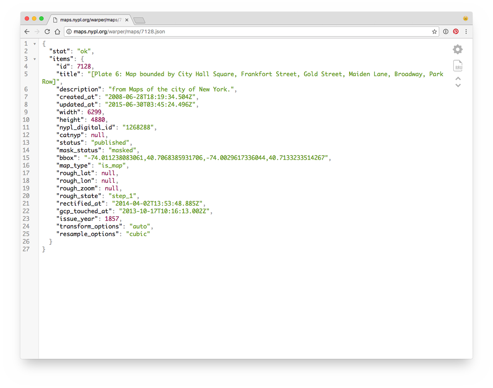
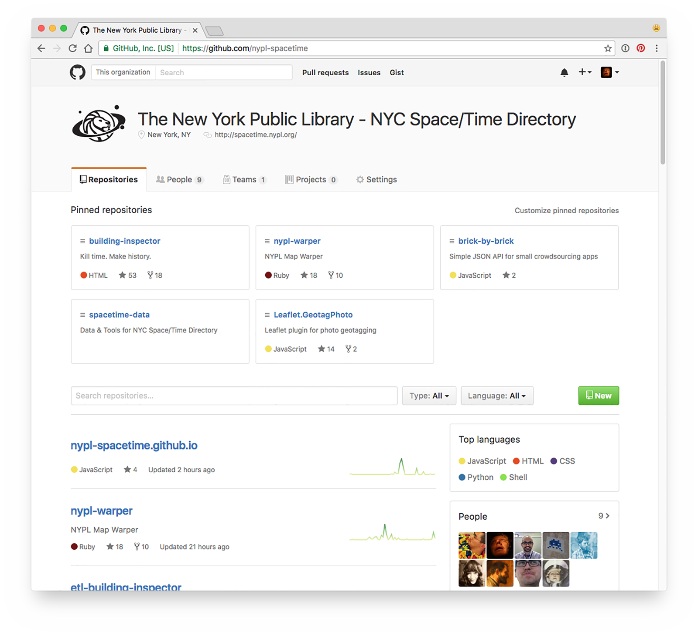
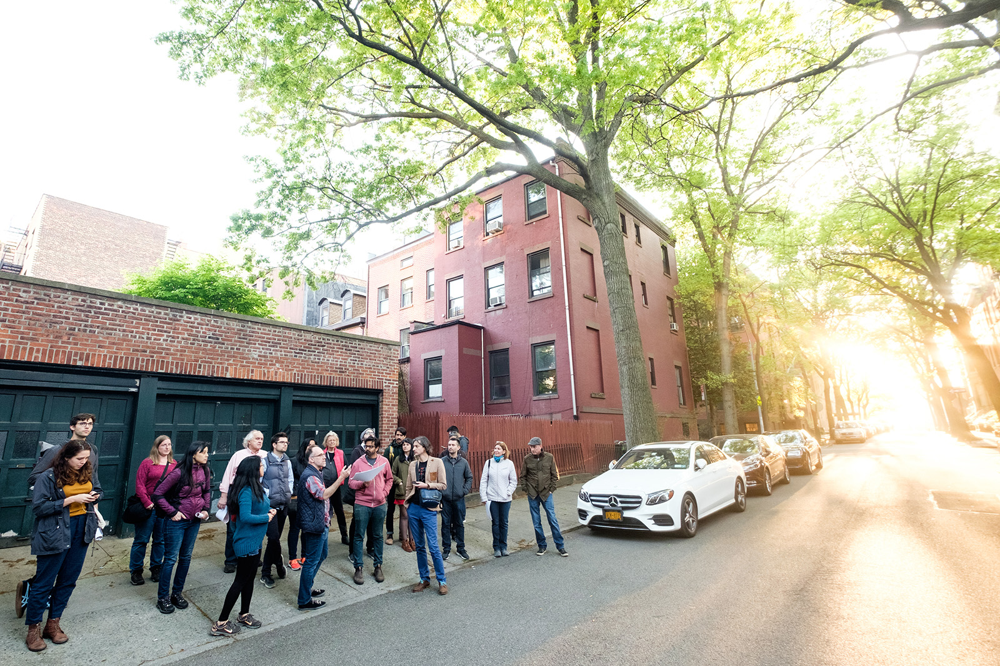
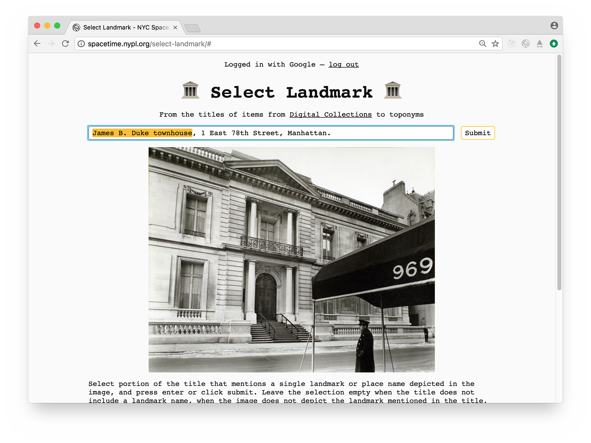
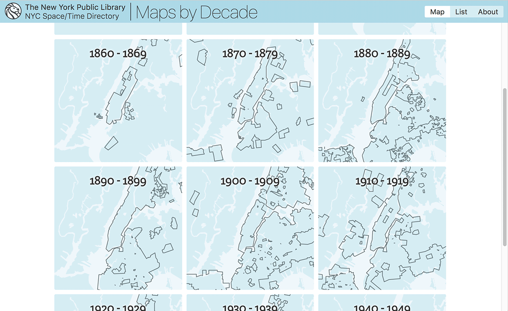
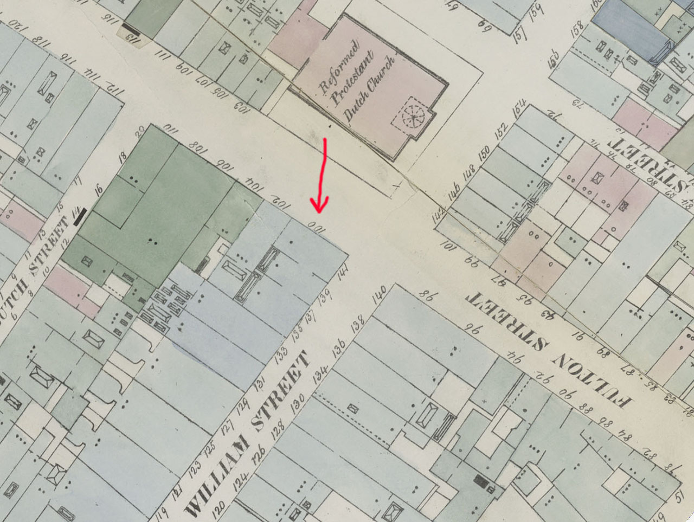

NYPL's NYC Space/Time Directory
I am Bert Spaan!
Example 1: Brooklyn's farms
Example 2: beer
Example 3: cars
First step: the Libary's collections!

Second step: digitization!

Third step: extract data!

Fourth step: combining it all!
NYC Space/Time Directory: NYPL data + external datasets + databases +
APIs + search + geo + RDF + open source + digitization + crowdsourcing + community
NYC Space/Time Directory: all NYPL's historical geospatial data in one place and one format

Fifth step: open data + community!


Sixth step: more crowdsourcing!

Seventh step: make things!

Last example: historical addresses
